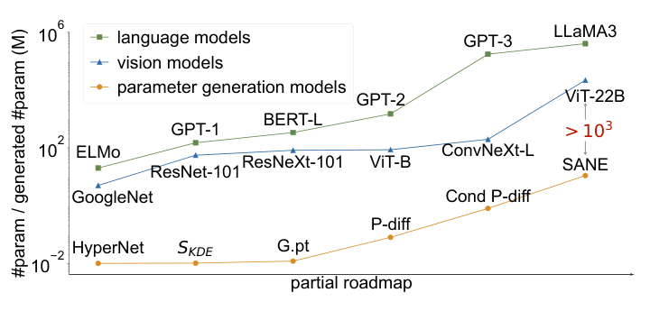
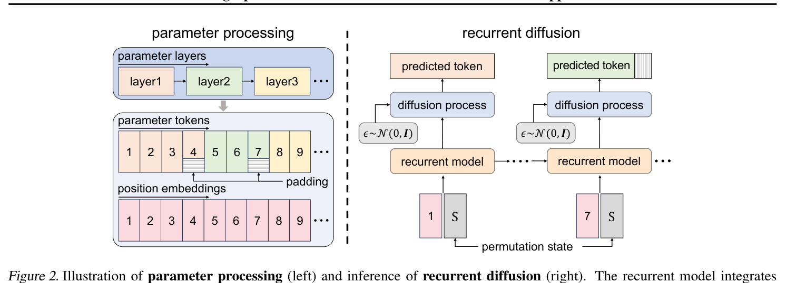
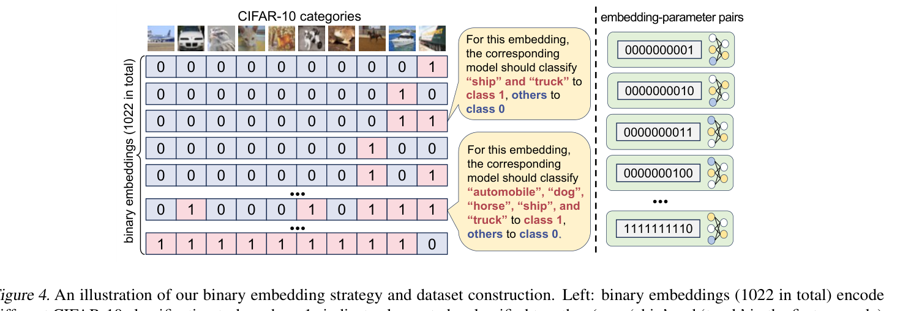

规模鸿沟：参数生成领域落后主流模型十年
论文 Fig 1 是一张 log-log 图，把三类模型放在同一坐标轴上：语言模型（ELMo→GPT-1→BERT-L→GPT-2→GPT-3→LLaMA3）、视觉模型（GoogleNet→ResNet-101→ResNeXt-101→ViT-B→ConvNeXt-L→ViT-22B）、参数生成模型（HyperNet→SKDE→G.pt→P-diff→Cond P-diff→SANE）。前两类的参数规模沿指数曲线一路爬到 $10^9$；而参数生成模型从 2017 年 HyperNet 到 2024 年 SANE，六年只从 $10^{-2}$ M 爬到 $10^2$ M——中间的 gap 至少 $10^3$ 倍，论文用红色箭头直接标了出来。

Figure 1（精裁）· log-log 坐标。绿线语言模型、蓝线视觉模型都在 $10^8$–$10^9$ 区间；橙线参数生成模型还停在 $10^0$–$10^2$ M。红色 ">$10^3$" 是论文要跨越的鸿沟。
这个鸿沟不是"还没来得及做"，而是方法本身做不到。HyperNetwork 直接生成整个网络权重，显存关于目标模型参数量平方涨；P-diff 等扩散方法把参数 flatten 成一维向量去噪，但一维向量长到 2 亿维时，1D U-Net 的显存和计算都扛不住。论文要回答的问题是：怎样在不把两亿参数一次性塞进显存的前提下，让生成模型看到参数之间的全局关系？
动机实验：把两个训练好的 ViT 各切一半拼起来，准确率掉到 45.8%
论文用一个极其朴素的实验证明"参数间有强全局关系"这件事不是装饰，而是必须建模的硬约束。
训练两个 ViT-Tiny（A 和 B）在 CIFAR-10 上各收敛，A 准确率 90.4%，B 89.6%。然后把 A 和 B 的层参数对半交换——前一半层用 A 的，后一半层用 B 的。这个"杂交模型"的准确率直接崩到 45.8%，几乎是瞎猜（二分类 50%）。
如果参数之间是独立的，那"把参数 flatten 成一维向量逐块去噪"（P-diff 的做法）就够了。但换层实验证明：不同层的权重必须是"配套生产"的。前一层的特征分布决定了后一层要学什么。这就要求生成模型在生成第 $l$ 层参数时，必须"记得"前面层生成了什么——这正是 recurrent model 的作用。RPG 不是为了用 Mamba 而用 Mamba，是换层实验逼出来的设计选择。
前人方法的两条死路：HyperNet 显存爆炸，P-diff 忽略全局关系
论文把之前的参数生成方法分成两类，各有一个致命伤。
HyperNetwork 路线：生成器输出整个权重，显存 O(目标参数量²)
HyperNetwork（Ha et al. 2017）用一个大网络直接输出目标网络的所有权重。生成器最后一层的输出维度等于目标网络参数量，梯度也要回传过整个生成器——显存关于目标参数量平方涨。这就是为什么 HyperNet 十年了只能生成几兆参数的小 CNN。
扩散路线：flatten 成一维逐块去噪，但块与块之间没关系
P-diff（Wang et al. 2024）把参数 flatten 成一维向量，用 1D U-Net 做扩散。它解决了显存问题——U-Net 是局部卷积，不需要看全局。但它付出的代价是：每个 patch 只看自己的局部邻域，看不到跨层的全局耦合。这正好撞上了换层实验揭示的问题。SANE（Schürholt et al. 2024）用 autoencoder 压缩参数分布，但也没有显式建模 token 间关系。
RPG 把问题拆成两个，各用一个工具解决：(1) 全局关系——用 recurrent model（Mamba）把所有 token 序列扫一遍，让每个 token 都"看见"其他 token，输出 prototype；(2) 局部去噪——用 1D 卷积扩散，以 prototype 为条件，逐 token 从噪声去噪成真实参数。Recurrent 负责"记全局"，diffusion 负责"磨局部"。这个解耦是它能 scale 到 200M 的根本原因。
Parameter Processing：把权重切成 8192 个 token，每步都有讲究
直接 flatten 两亿维参数是灾难。论文设计了四步预处理流水线，每一步都对应一个具体的失败模式。
Step 1 按层分：不同层的权重分布差很多——embedding 层、attention 层、FFN 层、head 层的 scale 完全不同。如果 flatten 成一维再归一，浅层会被深层的大方差淹没。先按层切开，保留层间边界。
Step 2 层内归一：每层减自己的均值 $\mu$、除自己的标准差 $\sigma$。这样每个 token 都在零均值单位方差附近，扩散模型不需要学"这一层是 0.01 scale 还是 0.1 scale"这种无关紧要的尺度差异，集中精力学形状。
Step 3 切成均匀大小 k 的 non-overlapping tokens：论文默认 token 长度 8192。不够长的层用 padding 补齐，但 padding 位置在 loss 里 mask 掉——不影响梯度。
Step 4 2D 位置编码：给每个 token 一个二维正弦位置编码 $e^{[i]}_j$——第一维是层索引 $i$，第二维是层内 token 索引 $j$。这样模型知道"这个 token 属于第几层、在层内第几个位置"。

Figure 2（精裁）· 左 parameter processing：layer1/2/3 切成 token 1–9（4 和 7 后面有 padding），每个 token 配 position embedding。右 recurrent diffusion：permutation state S + token id 喂给 recurrent model，输出 prototype 作为扩散条件，从噪声 ε 去噪出 predicted token。
Permutation State：治神经对称的"一热编码"
收集训练数据时，论文从 timm 里微调了 50 个 checkpoint。问题来了：神经网络有神经对称（neural symmetry, Kunin et al. 2021）——同一个网络权重可以把隐藏单元互换，输出不变，但参数矩阵看起来完全不同。如果不加处理，生成器会把这两个数学上等价的权重当成两个不同样本去学，分布就散了。
论文的解法极其朴素：给每个 checkpoint 一个 one-hot 向量 $S$ 作为"身份标签"。训练时把 $S$ 拼进 recurrent model 的输入，让生成器知道"现在在学哪个 checkpoint 的分布"。推理时给一个新的 $S$，就能采样出这个 checkpoint 附近的变体。
严格说，one-hot permutation state 没有对齐不同 checkpoint 的等价权重——它只是告诉生成器"这是第 1 号样本、那是第 2 号样本"，让生成器把它们当独立数据点学。这是一个工程妥协：真正的对称对齐需要 Hungarian matching 或 Sinkhorn 之类的置换不变性，计算昂贵。论文选了便宜的做法，消融也没对比"不用 S 会怎样"。但它能 work，说明在 50 个 checkpoint 的规模下，生成器有足够容量记住每个样本的局部模式，不需要跨样本对称对齐。
Recurrent Model：Mamba 把 token 序列扫一遍，压成 prototype
预处理完得到 token 序列 $K=(k^{[1]}_1,\dots,k^{[I]}_J)$。接下来要让模型"看到所有 token 之间的关系"。论文选了 Mamba（Gu & Dao 2024）作为 recurrent model，原因很直接：序列长（8192 个 token）、要因果建模（生成第 $j$ 个 token 时只看前面的）、显存要省。
其中 $H^{[i]}_j$ 是内部隐藏状态，$e^{[i]}_j$ 是位置编码，$S$ 是 permutation state。输出 $P^{[i]}_j$ 叫 prototype——不是最终参数值，而是"这个 token 应该长什么样"的条件向量。后面 diffusion 模型以这个 prototype 为条件去去噪。
消融 Table 5 给了答案：LSTM 75.5% / 16.1h / 38.1GB；Transformer 75.0% / 4.2h / 29.1GB；Mamba 75.4% / 4.1h / 27.8GB。三者精度差不多，但 Mamba 比 LSTM 快 4 倍、比 Transformer 省 1.3GB。Mamba 的选择性状态空间天然适合长序列线性扫描，不需要 attention 的 $O(n^2)$ 显存。这是工程选择，不是原理选择——换成 xLSTM 或 RWKV 应该也能 work。
Diffusion 去噪：以 prototype 为条件，从 ε 生成具体权重
有了 prototypes $P$，下一步是把它们"实现"成具体的参数值。论文借鉴 p-diff 和 MAR，用一个 1D 卷积网络做扩散去噪。
标准的 DDPM 目标：给加噪后的 token $K_t$、时间步 $t$、条件 $P$，预测噪声 $\epsilon$。1D 卷积网络只看 token 局部邻域（kernel 大小有限），但因为 $P$ 里已经从 recurrent 模型带了全局信息，局部去噪也能保持全局一致。
如果 Mamba 最后一层直接回归出 $K$ 的具体数值，那就是一个超大规模回归任务——要一次性输出两亿个浮点数，回归 loss 会被高频细节淹没。扩散把这个问题拆成 $T$ 步：每步只预测一个噪声，逐步把高频细节磨出来。这是扩散在图像生成里已经验证过的优势——生成质量比直接回归高得多。RPG 把它搬到了权重生成上。
# 1. 给定 permutation state S（哪个 checkpoint）+ position embeddings prototypes = mamba_forward(S, pos_emb) # [J, d]，每个 token 一个 prototype # 2. 从标准正态采样初始噪声 K_t = torch.randn(num_tokens, token_dim) # ε ~ N(0, I) # 3. DDIM 反向迭代去噪（论文默认 100 步，20 步也可用） for t in reversed(range(num_steps)): eps_pred = denoiser(K_t, t, prototypes) # 1D conv，以 P 为条件 K_t = ddim_step(K_t, eps_pred, t) # 逐步去噪 # 4. K_t 现在就是生成的参数 token，反归一化 + reshape 成 W W_generated = inv_layer_norm(reshape(K_t)) # 197.8M 参数的 ConvNeXt-L 整个过程 ~1.3 分钟，~20GB 显存
主结果：ImageNet 七架构 + ADE20K/COCO + LLaMA-7B DoRA
论文在四个任务族上验证。训练数据是从 timm 微调出来的 50 个 checkpoint，推理时给 permutation state，跑 100 步 DDIM，重复 10 次报 best/avg/min。
ImageNet-1K 分类（七架构，3.7M – 197.8M）
| 架构 | 参数量 (M) | 原始模型 % | RPG best | RPG avg | RPG min |
|---|---|---|---|---|---|
| ResNet-18 | 11.7 | 70.0 | 69.9 | 69.5 | 69.0 |
| ResNet-50 | 25.6 | 79.8 | 79.6 | 79.5 | 79.4 |
| ViT-Tiny | 5.7 | 74.9 | 75.4 | 75.3 | 75.2 |
| ViT-Small | 22.1 | 81.4 | 80.6 | 80.5 | 80.1 |
| ViT-Base | 86.6 | 84.4 | 84.6 | 84.4 | 84.2 |
| ConvNeXt-Atto | 3.7 | 75.2 | 74.6 | 74.4 | 74.2 |
| ConvNeXt-Large | 197.8 | 85.8 | 85.8 | 85.5 | 85.2 |
表 1（按论文 Table 1 自绘）· 注意 ViT-Tiny RPG best 75.4 甚至超过原始 74.9——生成模型在某些小架构上"超额完成"。
ADE20K 分割与 COCO 检测（ViT-Base 骨干）
| 任务 | 指标 | 原始 | RPG |
|---|---|---|---|
| ADE20K 分割 (176.5M) | mIoU (%) | 47.6 | 47.1 |
| mAcc (%) | 58.3 | 57.5 | |
| COCO 检测 (110.9M) | mAP Bbox | 43.6 | 44.5 |
| mAP Seg | 39.0 | 39.6 |
表 2（按论文 Table 2 自绘）· RPG 在 COCO 两个 mAP 上甚至超过原始模型。
LLaMA-7B DoRA 常识推理（rank=4 和 64）
论文用 DoRA（LoRA 的升级版）微调 LLaMA-7B 在七个常识推理任务上。rank=4 时参数 7.8M，rank=64 时 113.1M。RPG 生成的 DoRA 权重在 BoolQ/PIQA/SIQA/HellaSwag/ARC-e/ARC-c/OBQA 七个子任务上与原始微调模型几乎打平——有些子任务（rank=4 时 PIQA 72.0 vs 71.3、HellaSwag 56.7 vs 53.7）甚至超过原始。这是参数生成第一次在 LLM 微调权重上 work。
要理解这个结果有多强，先想清楚原始模型是怎么来的：它是在 ImageNet 上训了几百 GPU 小时收敛的。RPG 没有再训任何权重——它只是学了一个"参数分布"，然后从这个分布里采样一个 checkpoint，直接拿去测 ImageNet。生成的权重没有在 ImageNet 上做任何梯度更新，准确率却和训出来的一样。这等于说：RPG 学会了"ImageNet 上一个好 checkpoint 长什么样"的分布，而不只是记住某一个 checkpoint。
消融：去掉 recurrent 直接随机猜，Mamba 是性价比之王
Recurrent model 是命门（Table 4a）
把 recurrent model 的状态转移函数去掉——相当于让每个 token 独立生成，不看其他 token。结果：ViT-Tiny ImageNet 直接掉到随机水平（论文标 "fail"）。有 recurrent 时 75.4%。这一个消融就证明了换层实验的推论：全局关系不是锦上添花，是必要条件。
Token size 的 scaling（Table 6）
| 模型 | 参数量 | k=1024 | k=2048 | k=4096 | k=8192 | k=16384 |
|---|---|---|---|---|---|---|
| ViT-Tiny | 5.7M | 0.3 | 70.8 | 75.2 | 75.3 | 69.3 |
| ViT-Small | 22.1M | 0.1 | 0.7 | 80.5 | 80.5 | 80.4 |
| ViT-Base | 86.6M | 0.1 | 0.1 | 0.2 | 45.3 | 84.4 |
表 3（按论文 Table 6 自绘）· 大模型需要大 token：ViT-Base 在 k=8192 时只有 45.3%，k=16384 才到 84.4%。
这张表揭示了一个 scaling law：目标模型越大，每个 token 必须越大才能装下足够信息。ViT-Tiny（5.7M）k=2048 就够，ViT-Base（86.6M）必须 k=16384。这意味着要生成 70B 模型，token size 可能要到 64K 甚至更大——显存和计算又是一个坎。
推理时间与显存（Table 7）
| 模型 | 显存 | 20 步 | 60 步 | 100 步 | 200 步 |
|---|---|---|---|---|---|
| ViT-Base | 20.7GB | 0.6min / 83.3% | 0.8min / 84.4% | 1.1min / 84.4% | 1.8min / 84.3% |
| ConvNeXt-L | 21.6GB | 0.7min / 85.0% | 1.3min / 85.5% | 2.0min / 85.3% | 3.5min / 85.3% |
表 4（按论文 Table 7 自绘）· 20 步 DDIM 已经能拿到 85% 精度——推理效率很高。
与前人方法对比（Table 8）
| 方法 | CNN (s) 0.003M | CNN (m) 0.011M | ResNet-18 11.7M | ViT-Base 86.6M |
|---|---|---|---|---|
| SKDE30 | 26.9 / 46.1 | — | OOM | OOM |
| p-diff | 48.8 / 49.0 | 61.9 / 62.1 | OOM | OOM |
| SANE | — | 57.9 / 57.2 | 68.6 / 85.5 | — |
| D2NWG | 38.2 / 44.7 | 58.8 / 57.2 | 94.6 / 94.6 | — |
| RPG | 49.0 / 49.0 | 62.0 / 62.1 | 95.1 / 95.3 | 98.9 / 98.7 |
表 5（按论文 Table 8 自绘）· 之前方法在 ResNet-18 就 OOM，RPG 一路生成到 ViT-Base 还保持最高精度。
泛化到未见任务：1022 个二分类，只学 1002 个
论文最有想象力的实验在第四章。他们把 CIFAR-10 的 10 个类别编码成 10-bit 向量——每一位代表"这个类别算不算正类"。去掉全 0 和全 1，一共 $2^{10}-2=1022$ 个二分类任务。为每个任务训一个 ViT-Tiny，收集 1022 个 (embedding, 参数) 对。

Figure 4（精裁）· 上排 CIFAR-10 十类图片；左列 10-bit 二值向量，1 表示该类归正类；右列每个 embedding 对应一个训练好的模型权重图。
训练时只用 1002 个 seen 任务的参数对，把 embedding 作为条件喂给 recurrent model。测试时给 20 个没见过的 embedding，让 RPG 直接生成对应模型的参数，不做任何额外训练。
| 未见 embedding | 原始模型 % | RPG 生成 % |
|---|---|---|
| 0100010111 | 97.3 | 94.4 |
| 0111110110 | 98.1 | 96.6 |
| 0011101110 | 97.4 | 95.0 |
| 0101111111 | 98.4 | 96.1 |
| 0010000000 | 98.9 | 96.6 |
| 0001100101 | 96.7 | 92.9 |
| 1111101001 | 97.6 | 94.8 |
| 1010000011 | 98.1 | 95.7 |
| 0100010110 | 97.1 | 93.6 |
| 1100011001 | 97.0 | 94.0 |
表 6（按论文 Table 9 自绘）· 20 个未见任务，RPG 生成模型比原始低 1–3 个点，但都在 92% 以上——这是真正的"零训练生成新任务"。
更绝的是 Table 10 的 flip 实验：把一个 seen embedding 每一位取反，RPG 生成的模型在新任务上准确率和原任务几乎一样高（不是 50%）——说明它真的"读懂"了 embedding 语义，不是死记硬背。
生成同分布的 checkpoint 不算什么——那只是"记住了训练集的模式"。但给一个没见过的 embedding（哪类算正类），RPG 直接生成一个能在新任务上 95% 准确率的模型，这说明它学的不是"某一组权重"，而是"embedding 到权重的映射函数"。这和 hypernetwork 的终极愿景一致：给条件，出权重。RPG 第一次在百万到亿参数规模上证明了这件事。
局限与批判
论文自己在 Discussion 里承认：RPG 能生成 ConvNeXt-L 的参数，但你不能让它生成一个没见过的新架构（比如 Mixer 或 MLP-Mixer）。token 化、position embedding、recurrent model 的结构都是绑定到具体架构的。真正的"AI generating AI"需要跨架构——这是下一步。
ImageNet 的 RPG 只学 ImageNet checkpoint 的分布；CIFAR-10 binary embedding 的 RPG 只学那 1022 个任务。你不能让同一个 RPG 模型既生成 ImageNet 权重又生成 COCO 权重。论文明确说"future work should focus on simultaneously modeling parameter relationships across diverse architectures and tasks"。
ImageNet 实验只用了 50 个 checkpoint。50 个样本训一个能生成 200M 参数的分布，这在传统生成模型看来是不可想象的少。能 work 是因为所有 checkpoint 都来自同一个架构、同一个任务，分布很窄。换一个跨任务的数据集，50 个样本远远不够。论文没给 scaling law——需要多少 checkpoint 才能训好 RPG？
one-hot S 只是给每个 checkpoint 贴标签，没有做真正的权重对齐。当 checkpoint 数从 50 涨到 5000，one-hot 维度爆炸，而且不同 checkpoint 之间的对称性（比如同样的特征通道互换）依然没被建模。这是论文方法的一个理论短板。
100 步 DDIM 要 1.3 分钟生成 ConvNeXt-L。虽然 20 步就能拿到 85% 精度，但要逼近原始模型还是要 100 步。相比直接加载一个训好的 checkpoint（毫秒级），生成一个新 checkpoint 要分钟级——这在"快速部署"场景还不够快。蒸馏扩散（如 consistency model）可能是下一步。
留给研究者的五个问题
能不能让一个 RPG 模型生成多种架构？
现在 RPG 绑定单一架构。如果把"架构类型"也作为 condition 喂给 recurrent model（像 permutation state 一样），能不能在同一个 RPG 里同时学 ResNet/ViT/ConvNeXt 的参数分布？这是通向通用参数生成器的关键一步。
RPG 能同时学 ImageNet + COCO + ADE20K 的参数分布吗？
论文每个任务单独训一个 RPG。如果能把任务 ID 作为 condition，同一个 RPG 模型就能根据任务 condition 生成对应权重——这才是"一个生成模型服务所有任务"。
能不能用 consistency model 或 few-step 蒸馏把生成时间压到秒级？
1.3 分钟生成 200M 参数在"研究"场景够用，在"实时 NAS"场景不够。把 DDIM 100 步蒸馏成 2-4 步，是工程上最直接的改进。
能不能用 Sinkhorn / Hungarian 做真对称对齐，替代 one-hot permutation state？
one-hot S 在 checkpoint 数大时会爆炸。真正的置换不变生成器应该把等价权重自动对齐——这需要在训练时做通道置换匹配，计算贵但理论干净。
能生成完整 LLM 权重（不是 LoRA）吗？
RPG 目前只生成 LLaMA-7B 的 DoRA（113M 参数），不是完整 7B。要生成完整 7B 甚至 70B 权重，token size 要到多少？recurrent model 要多大？这是下一个量级的挑战。
RPG 的贡献不是 SOTA，而是把参数生成这个十年没动过的领域从"玩具"推到了"可用"——单 GPU、200M 参数、追平原训练模型、还能泛化到未见任务。它的核心解法是一个朴素但有效的工程拆分：recurrent 管全局，diffusion 管局部。这个拆分思路未来会和 LoRA 生成、hypernetwork、weight-space diffusion 继续融合。真正的"AI generating AI"还很远（论文自己承认），但 RPG 是目前最像样的一块踏脚石。